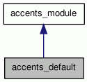

accents_default Class Reference
Derived accents_module for null accentuation (eg english). More...
#include <accents_modules.h>
Inheritance diagram for accents_default:

Collaboration diagram for accents_default:

Public Member Functions | |
| accents_default () | |
| Constructor. | |
| void | fix_accentuation (std::set< std::string > &, const sufrule &) const |
| default accentuation patterns | |
Detailed Description
Derived accents_module for null accentuation (eg english).
Constructor & Destructor Documentation
| accents_default::accents_default | ( | ) |
Member Function Documentation
| void accents_default::fix_accentuation | ( | std::set< std::string > & | candidates, | |
| const sufrule & | suf | |||
| ) | const [virtual] |
default accentuation patterns
default behaviour: Do nothing.
Implements accents_module.
References TRACE.
The documentation for this class was generated from the following files: